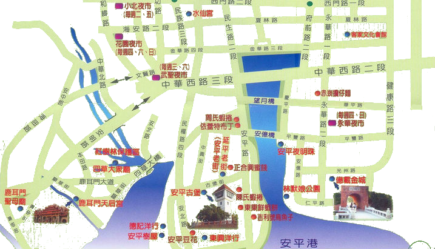
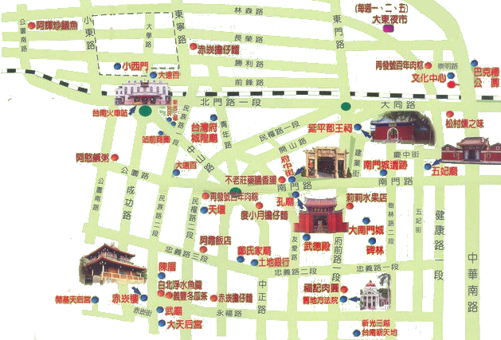
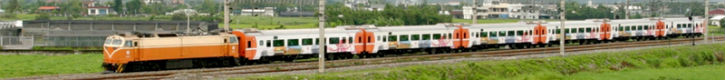

        <div class="col-sm-7 col-sm-offset-3 margin_main_content ">
            <div id="travel_content" class="main_content">
				<div class="row">
					<h2 class="title">
						<strong>旅遊指南</strong>
						<div class="pull-right"><small>文化之城，百年府城</small></div>
					</h2>
				</div>
                <hr class="h_color">
                <div class="row">
                    <div class="col-sm-10 col-sm-offset-1">
					<!--BUTTON-->
					<div class="map_content display_small">
						<div class="row traffic_button_block">
							<div class="col-xs-12">
							<div class="row">
							<div class="col-xs-6 traffic_button button_3">
								
								<a href="http://tour.tainan.gov.tw/"> 台南觀光局</a>
							</div>
							<div class="col-xs-6 traffic_button button_1">
								
								<a href="http://twtraffic.tra.gov.tw/twrail/"> 火車轉乘資訊 </a>
							</div>
							<div class="col-xs-6 traffic_button button_2">
								
								<a href="http://www.thsrc.com.tw/index.html?force=1"> 高鐵轉乘資訊</a>
							</div>
							<div class="col-xs-6 traffic_button button_3">
								
								<a href="http://2384.tainan.gov.tw/TNWeb/Index.jsp?locale=zh_TW&agis=Yes"> 台南公車資訊</a>
							</div>
							</div>
							</div>
						</div>
					  </div>
					  <!--BUTTON-->
                        <div class="map_content display_large ">
                            <div class="map map_1">
                                
                            </div>
                            <div class="map map_2 active">
                                
                            </div>
                            <div class="map map_3">
                                <div class="group">
                                    
                                    <span class="travel_header"><a href="http://tour.tainan.gov.tw/">台南觀光局</a></span>
                                    <div class="travel_title"></div>
                                </div>
                                <div class="group">
                                    
                                    <span class="travel_header"><a href="http://twtraffic.tra.gov.tw/twrail/">火車轉乘資訊</a></span>
                                    <div class="travel_title"></div>
                                </div>
                                <div class="group">
                                    
                                    <span class="travel_header"><a href="http://2384.tainan.gov.tw/TNWeb/Index.jsp?locale=zh_TW&agis=Yes">台南公車資訊</a></span>
                                    <div class="travel_title"></div>
                                </div>
                                <div class="group">
                                    
                                    <span class="travel_header"><a href="http://www.thsrc.com.tw/index.html?force=1">高鐵轉乘資訊</a></span>
                                    <div class="travel_title"></div>
                                </div>
                            </div>
                        </div>
                        <div class="travel_content row">
                            <div class="col-sm-3 ">
                                <ul class="travel_list nav nav-pills nav-stacked">
                                    <li class="list1"><a>安平之旅<span></span></a></li>
                                    <li class="active list2"><a>市區旅遊<span></span></a></li>
                                    <li class="list3"><a>其他旅遊資訊<span></span></a></li>
                                </ul>
                            </div>
                            <div class="travel_word">
                                <div class="attraction_info list1_content col-sm-9 ">
                                說安平是台南文化的發源地也不為過，這裡是過去殖民的大本營，比比皆是的古蹟，像是大家耳熟能詳的安平古堡、億載金城、安平樹屋等等，讓人可以花上好幾天，細細咀嚼這歷史的痕跡。由於安平靠近海邊，特殊的西南海岸風景也是這裡的特色，像是特殊的蚵田養殖、跟沙岸的生態，可以到港邊，一邊踏浪，一邊看著漁船進港的風情，玩累了，安平老街以及港邊的海產餐廳也是不錯的選擇。
                                </div>
                                <div class="attraction_info list2_content col-sm-9 active">
                                台南市中心，為文化和美食交合的繁榮地帶，也是新舊文化融合與創新的地帶，古老的房子、時尚的摩天百貨公司交織在台南市，衝突但卻各有特色。身為藝術之都的台南，不時可以看見充滿創意的手創中心與市集。台南也有一個錯號，叫做美食之都，飄香過一甲子的傳統美食處處藏身在巷弄中。以上這些都是值得您去探尋，去欣賞的台南在地文化。
                                </div>
                                <div class="attraction_info list3_content col-sm-9">
                                近年來，台南的觀光越來越盛行，不論是搭火車或是高鐵，車站周圍都有便利的公車系統，密集的班次通往每個觀光景點，最新的旅遊資訊隨時更新在網路上，讓旅遊不再是負擔，而是享受。
                                </div>
                            </div>
                        </div>
                    </div>
                </div>
            </div>
        </div>